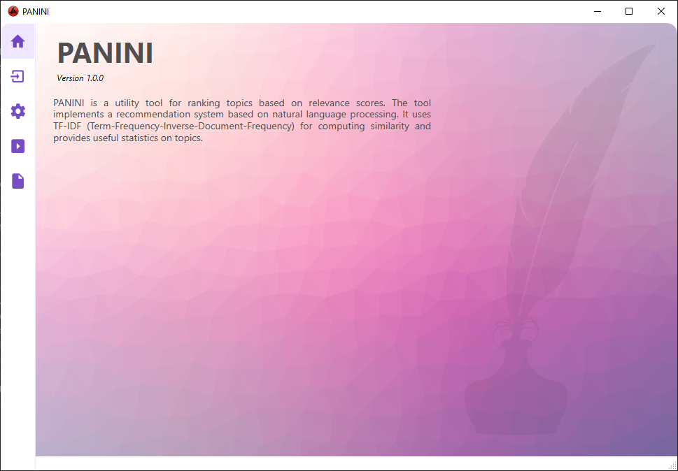

About
PANINI is a topic recommendation tool that makes it easier for technical writers to interlink topics of a guide. For each topic in the guide, the tool proposes similar topics depending on relevance rankings.

PANINI uses basic Natural Language Processing and Machine Learning techniques to process a set of web topics and compute cosine similarity scores using Term-Frequency Inverse Document-Frequency (TFIDF) measure. The tool provides useful statistics like:
- Topic Recommendations that can be used to incorporate inline and related links.
- Keyword Recommendations that can be used as pre-defined search queries.
- Word Rankings that define how unique a word is to a topic.
- Topic Summary in the form of number of existing inline links, related links, sentences, and words.
- Similarity Heatmap which provides a visual overview of similarity scores.